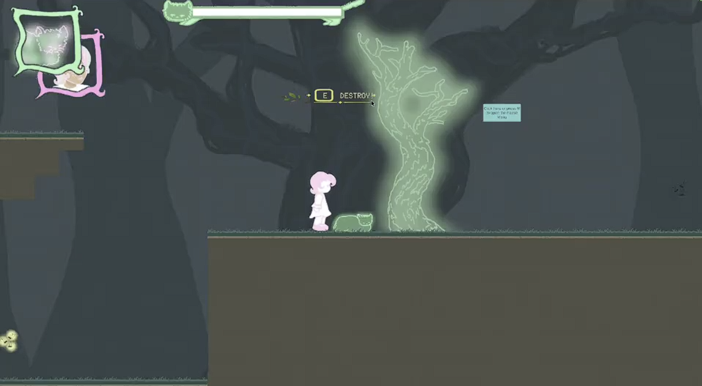
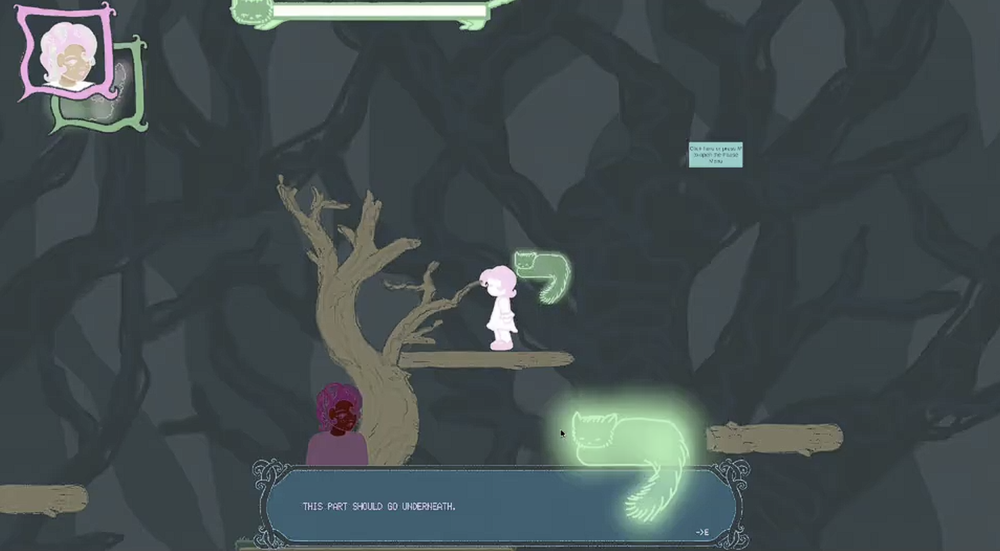
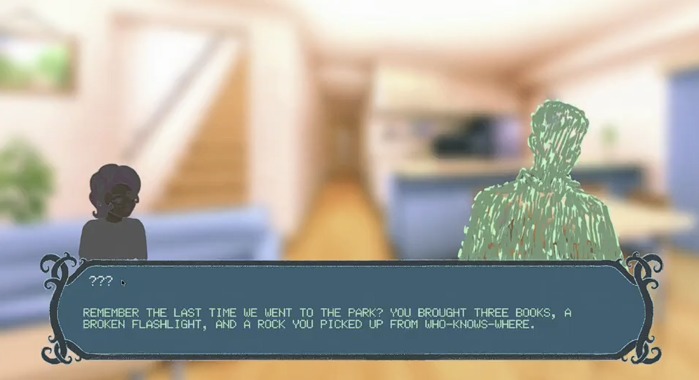
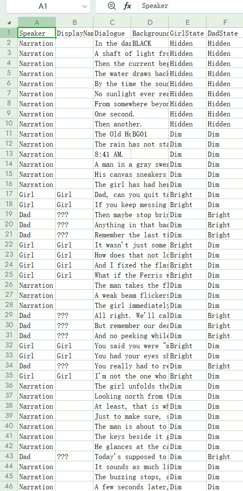

Narrative Design Portfolio
Hi! I’m Haoran, a Media Studies student at the University of Alberta. I like writing character-driven stories and figuring out how they can work inside an actual game.
This semester I’m the lead writer on A Way Home, a 2D puzzle-platformer made by a seven-person CMPUT 250 team. Most of my work has been on the story, dialogue, collectibles, and the flashback scenes that reveal the characters’ past.
A Way Home
2D puzzle-platformer · Unity · Seven-person team · Lead Writer / Narrative Designer

A Way Home follows a girl and a spirit cat as they travel through a dark forest together. The player switches between them and uses their different abilities to get through each level. Along the way, collectibles lead into conversations and memories that slowly fill in their shared past.
I’m the lead writer on the project. I wrote and revised dialogue, worked on the collectible system, and helped design the visual novel-style flashback scenes. I also worked on implementing the collectible and dialogue systems, so I spent a lot of time testing scenes in the level and changing them once I could see how they actually played.
Writing Samples
Here are a few examples from the current build. They show some of the writing and narrative systems I worked on for A Way Home.
Dialogue in Gameplay

Some conversations happen while the player is still moving through the level. I worked on the dialogue, where these conversations happen, and how long they last. I usually play through the section first and then trim or move lines if the scene feels too long.
Memory Scenes

Collectibles can lead into flashback scenes that show pieces of the girl’s past. I worked on the writing and presentation for these scenes, including the dialogue, speaker information, character states, and backgrounds.
Dialogue Spreadsheet

Most of our dialogue is kept in a spreadsheet. Each line can store the speaker, display name, dialogue, background, and character states. It makes revisions pretty quick. I can change an exchange in the sheet, run the level again, and see right away whether it works better.
Collectibles and Story Progression
I worked on the collectible system from the early design through implementation. Collectibles are one of the main ways the player finds more of the story, so their placement also affects when conversations and memories happen during a level.
Play / Watch Online
A Way Home – Narrative Design Gameplay Demo
A short playthrough showing dialogue and memory content from the current vertical slice.
A Way Home – Vertical Slice
Password: cmput250
About Me
I’m studying Media Studies at the University of Alberta. On a game team, I’m most comfortable working as a writer or narrative designer. I like dialogue, character work, and figuring out how story information reaches the player.
I’m also happy to work on implementation when the project needs it. On A Way Home, I’ve worked with design, programming, art, and audio while the game has changed from one build to the next. Seeing the writing change once it is actually in the game has been one of my favourite parts of the project.